Counselling
is a professional relationship that empowers diverse individuals, families and groups to accomplish mental health, wellness, education and career goals.
Book Your Consultation
V.R. Vanajaa
V.R. Vanajaa is a highly experienced Counselling Psychologist and Founder of Thrive Counselling and Career Guidance Centre, offering compassionate support for individuals, couples, children, and families through professional therapy and guidance.
Thrive Counselling and Career Guidance Centre works with clients collaboratively in a gentle, caring and warm-hearted way to ensure that they are heading down the right path in their dark moments.
Read More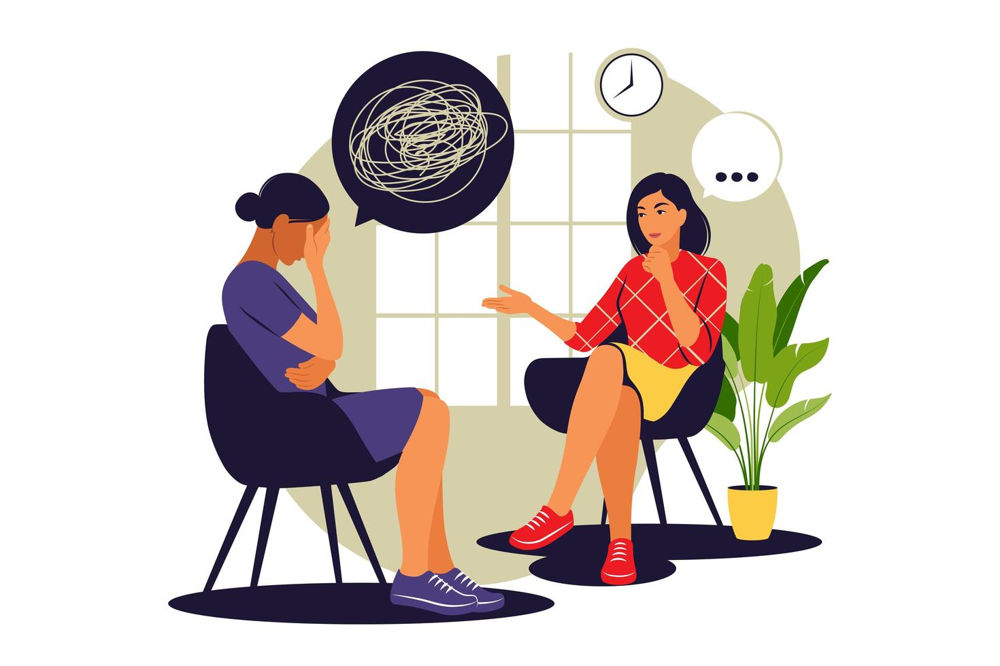
Our Services
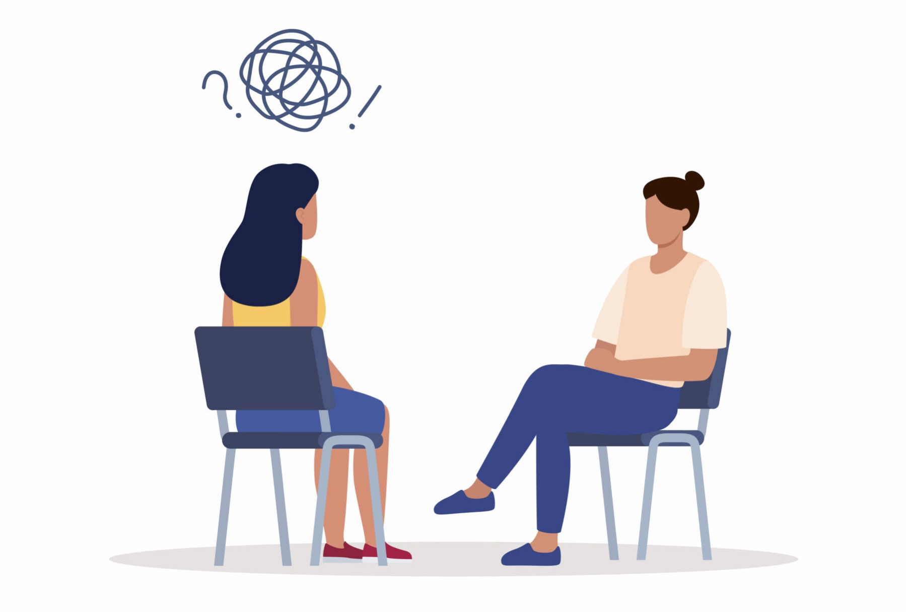
Individual Counselling

Couple Counselling
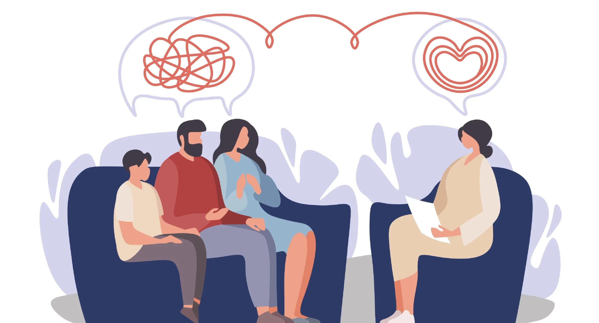
Family Counselling
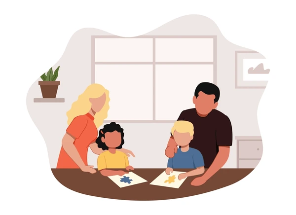
Parental Coaching
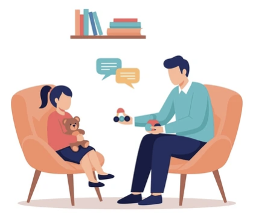
Adolescence Counselling
School / College Students Counselling
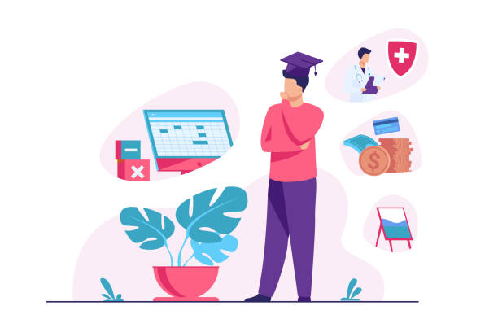
Career Guidance
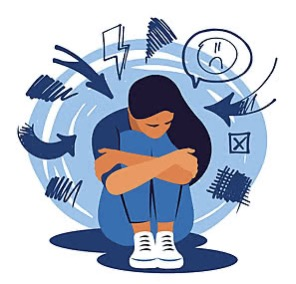
Depression / Anxiety Therapies
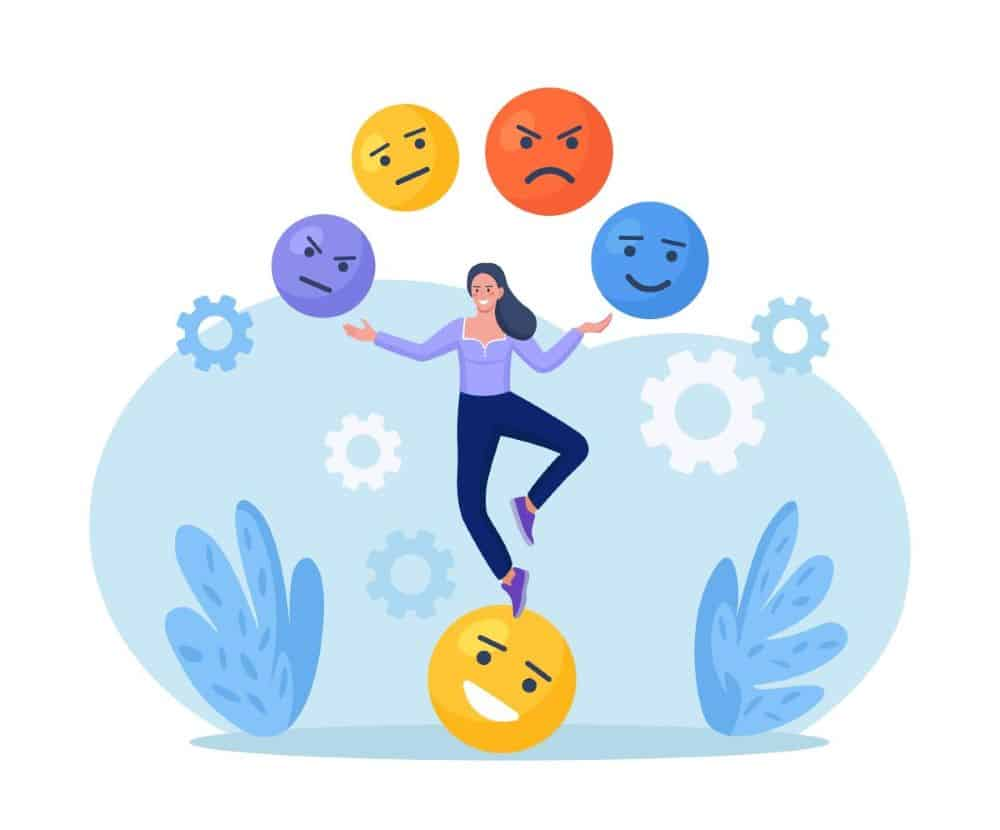
Behavioural Counselling
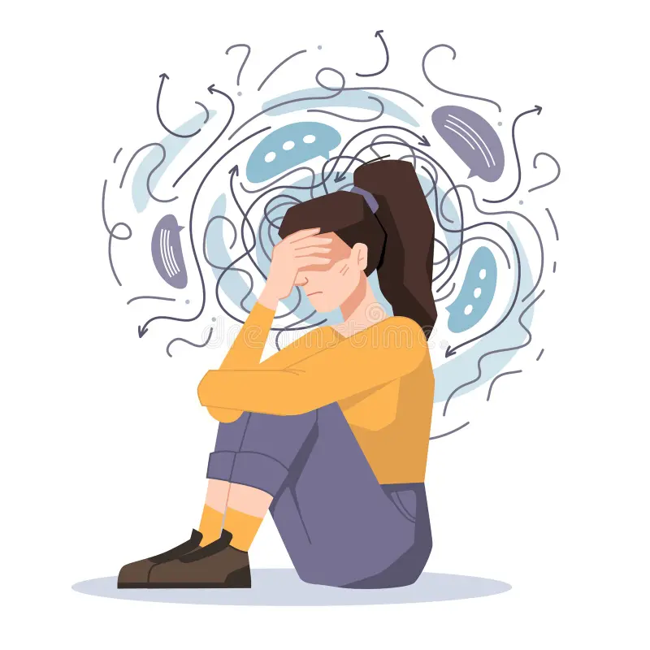
Phobias Counselling
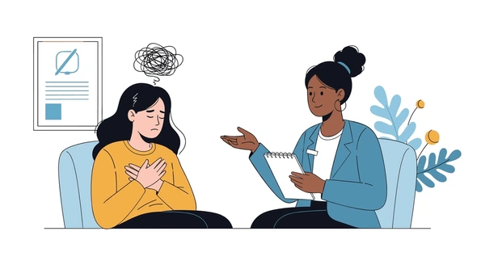
Guilt Counselling
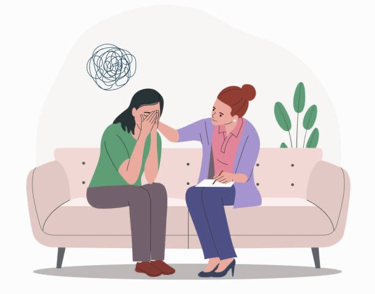
Grief Counselling
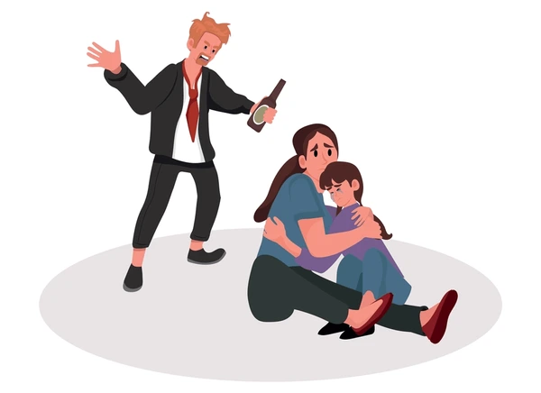
Domestic Violence Counselling
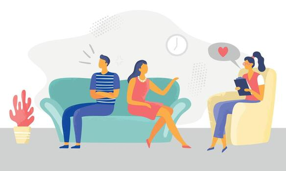
Pre Marital Counselling
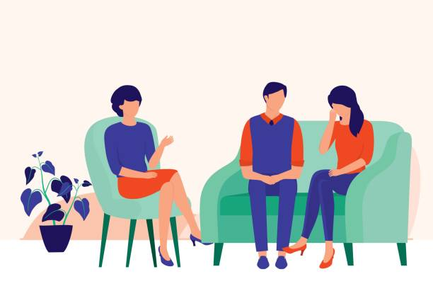
Marital and Relationship Counselling

Training on Personality Development
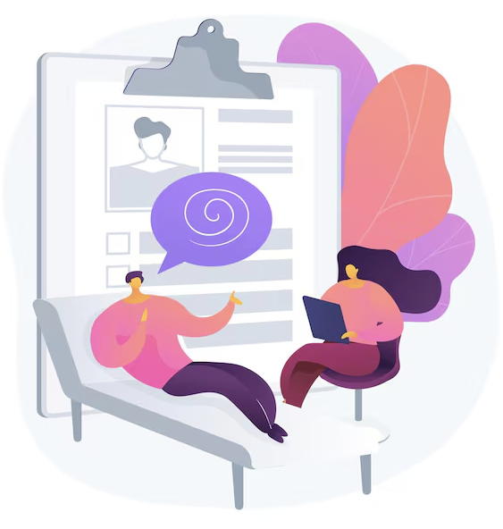
Aptitude / Psychometric Tests
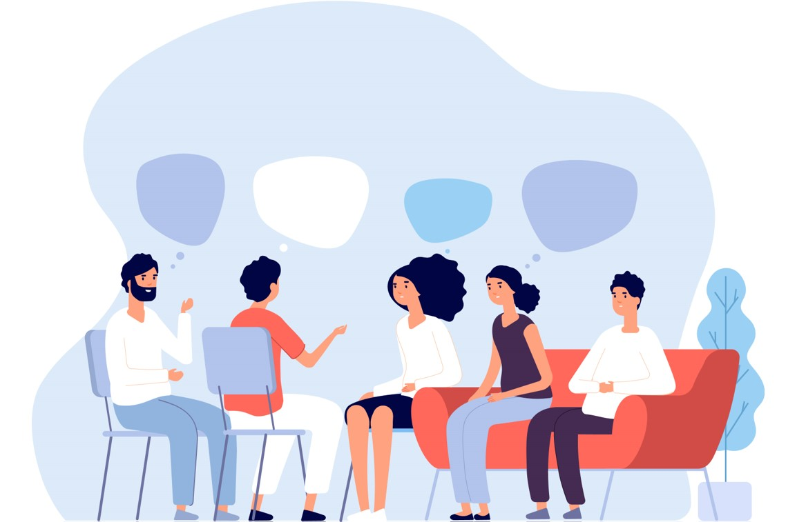
Corporate Counselling
It's Okay, Let's Talk
Contact us
If you would like to schedule a session or have any questions, please contact us. We are here to support you and will respond as quickly as possible.
Please Note: To ensure you receive dedicated time, all sessions require a prior appointment. We kindly ask that you book prior appointments before visiting the office.